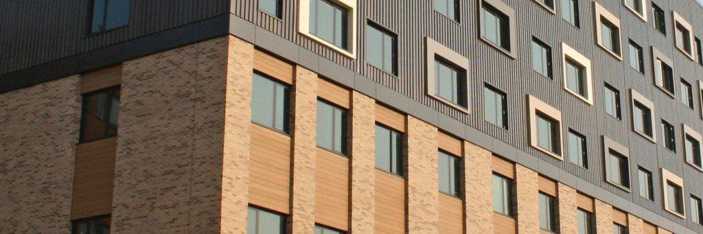

What Changed for Buildings Under 11 Metres
Until recently, government-funded cladding remediation was largely built around a height threshold: the Building Safety Fund for buildings over 18 metres, and the Cladding Safety Scheme (CSS) for buildings between 11 and 18 metres. Buildings under 11 metres generally sat outside both routes, regardless of what was actually happening with their external walls.
That position has now changed. Eligible residential buildings under 11 metres in England may access Cladding Safety Scheme funding where a Fire Risk Appraisal of External Walls (FRAEW), carried out in accordance with PAS 9980:2022 by a suitably qualified and competent professional, identifies unsafe cladding or external wall construction presenting a serious life-safety fire risk. The scheme is administered by Homes England.

In practical terms, the basis for eligibility has shifted from a fixed height cut-off towards evidence of genuine fire risk. Height is still relevant — the funding route covers buildings under 11 metres specifically — but height on its own no longer determines whether a building is in or out.
| Position | Before this change | Now, for eligible buildings under 11m |
|---|---|---|
| Government funding routes | Building Safety Fund (18m+) and Cladding Safety Scheme (11–18m) only | Cladding Safety Scheme extended to eligible buildings under 11m |
| Basis for eligibility | Largely determined by building height | Risk-based: a qualifying FRAEW finding of serious life-safety fire risk, subject to other eligibility criteria |
| Key evidence required | FRAEW required for 11–18m and 18m+ applications | PAS 9980:2022 FRAEW by a suitably qualified and competent professional |
| Application route | Homes England Building Remediation Hub | Same route, extended to the new under-11m cohort |
This matters because it means a genuine external wall fire risk at a low-rise block — a form under-11m cladding funding many freeholders, RTM companies and managing agents previously assumed simply wasn't available — may now be fundable, provided the building and the evidence meet the scheme's requirements.
The Application Window
Applications for the under-11m funding route opened on 17 August 2026 and closed on 9 October 2026, confirmed in Homes England's updated guidance published 10 October 2026. This was a one-off window rather than a rolling scheme, and new applications are no longer being accepted through the Building Remediation Hub. As of the last update to this page, no further window has been announced — Responsible Entities should check GOV.UK or Homes England's Building Remediation Hub for the current position before acting.
What happens to applications already submitted
Homes England has confirmed that applications submitted before the 9 October 2026 deadline will continue to be assessed. Funding within that pool is prioritised according to cladding fire safety risk, with buildings presenting a higher life-critical fire safety risk considered first.
If your building missed this window, the practical priority now is to get a credible Responsible Entity position and FRAEW evidence in place so you are ready to apply quickly if and when a further round opens, rather than starting from nothing if one is announced.
Who May Qualify
Eligibility depends on a combination of factors relating to the building, its use, and the evidence available. The table below summarises the main considerations — it is a starting point for discussion, not a substitute for checking current Homes England guidance against your specific building.
Being under 11 metres is not enough on its own
Height brings a building into scope for this funding route — it does not automatically qualify it. Funding depends on genuine, evidenced external wall fire risk, confirmed through a PAS 9980 FRAEW, alongside the building's use, dwellings and Responsible Entity arrangements.
| Factor | What it generally means |
|---|---|
| Building height | Under 11 metres in height, measured in line with the scheme's methodology. Height brings a building into scope for this route — it does not, on its own, make it eligible. |
| Building use | A multi-occupied residential building, rather than a single dwelling or a predominantly commercial building. |
| Dwellings | Contains two or more dwellings in England. |
| External wall / cladding | The external wall construction must present a genuine fire safety concern — the presence of cladding alone is not sufficient. |
| FRAEW / PAS 9980 | A FRAEW carried out in accordance with PAS 9980:2022 by a suitably qualified and competent professional, identifying a serious life-safety fire risk associated with the external wall. |
| Responsible Entity | A clearly identified Responsible Entity — the party with legal responsibility for the building — able to make and hold the application. |
Homes England will review and audit FRAEWs submitted as part of an application to determine whether the proposed remediation is necessary and proportionate. Meeting the eligibility criteria does not create an automatic entitlement to funding: applications remain subject to prioritisation, evidence quality, and the funding available.
Who Can Apply?
Applications must be submitted by the building's Responsible Entity, or an authorised representative acting on its behalf. This may include:
- Freeholders
- Head leaseholders
- Right to Manage companies (RTM company cladding funding applications)
- Resident Management Companies (RMCs)
- Registered providers of social housing
- Other organisations with legal responsibility for repair and maintenance of the building
Individual leaseholders and residents cannot submit the formal funding application themselves, though they are often the ones who first raise concerns that prompt the Responsible Entity to investigate. Where it isn't obvious who the Responsible Entity is — common in older or informally managed buildings — establishing this is usually the first practical step.
What Owners and RTMs Should Do Now
With the current window closed, the buildings best placed to act quickly if a further round opens are the ones that organise their information now rather than waiting for the next announcement. In broad terms, the sequence looks like this:
Establish who the Responsible Entity is
Confirm the freeholder, RTM company, RMC or other party with legal responsibility for the building and its remediation.
Gather existing building, fire and external wall information
Collect drawings, specifications, O&M manuals, fire risk assessments, and any previous external wall correspondence or surveys.
Review any existing FRAEW, EWS1 or external wall reports
Check what's already been done, when, by whom, and against what standard — this determines whether you're starting from scratch or building on existing evidence.
Determine whether a PAS 9980 FRAEW is required or suitable
Establish whether a new assessment is needed, or whether an existing report can be reviewed and, if necessary, updated to meet current requirements.
Appoint an appropriately qualified specialist where required
Commission a suitably qualified and competent fire engineer or facade consultant to carry out or review the FRAEW.
Establish the likely remediation requirements
Use the FRAEW findings to understand, in outline, what remediation or interim measures are likely to be needed and roughly what that involves.
Prepare the Cladding Safety Scheme application information
Collate the building, ownership, Responsible Entity and FRAEW information the application requires into a clear, complete package.
Submit or support the funding application
Submit through Homes England's Building Remediation Hub, or support the Responsible Entity or their representative in doing so.
Respond to Homes England queries
Applications are commonly followed by requests for clarification or further evidence — a prompt, organised response keeps the application moving.
Progress design, procurement and remediation if approved
Where funding is confirmed, move into design development, contractor procurement and delivery of the agreed remediation works.
Understanding the FRAEW Requirement
The FRAEW sits at the centre of an under-11m application. Homes England will use it to decide whether a genuine, serious life-safety fire risk exists — so it's worth understanding what it involves before you commission one, or before you rely on one you already have.
What is a FRAEW?
A Fire Risk Appraisal of External Walls (FRAEW) is a structured technical assessment of a building's external wall construction, carried out to identify whether it presents an unacceptable risk to life safety in the event of fire. It considers the wall build-up, insulation, cavity barriers, balconies and other features that can affect how fire or smoke might spread across or up a facade. For a fuller breakdown of what's involved and what a FRAEW typically costs, see our guide to FRAEW cost.
Why PAS 9980 matters
PAS 9980:2022 is the published code of practice that sets out how a FRAEW should be carried out, so that different assessors reach consistent, defensible conclusions rather than each inventing their own approach. For this under 11m cladding funding route, the assessment needs to have been carried out by a suitably qualified and competent professional in accordance with PAS 9980:2022. Our separate guide, PAS 9980 explained, covers what the standard actually requires in plain English.
Why the FRAEW matters for funding eligibility
The FRAEW is the primary evidence Homes England relies on to decide whether a building's external wall fire risk is serious enough, and sufficiently well-evidenced, to justify funding. A weak, out-of-date, or non-PAS-9980-compliant report is one of the most common reasons an otherwise plausible application struggles. Homes England will review and audit submitted FRAEWs, so the quality and clarity of the report — not just its headline conclusion — matters.
If your building already has a FRAEW
An existing FRAEW doesn't automatically transfer into a successful application. It needs to have been prepared in accordance with the appropriate version of PAS 9980, by a suitably qualified assessor, with sufficiently clear conclusions and recommendations regarding the external wall fire risk. We can review the available report and help establish whether it's likely to meet the scheme's requirements, or whether an update is advisable before you apply.
If you only have an EWS1 or an older external wall report
An EWS1 is a short-form valuation document, not a substitute for a full FRAEW — see our guide to FRAEW vs EWS1 for how the two differ. If your building's only external wall evidence is an EWS1, an older report, or nothing formal at all, a PAS 9980 FRAEW is very likely to be needed before an application can be credibly supported. Our guide Do I need a FRAEW? can help you think through whether that applies to your building.
What Happens If Your Building Is Accepted for Funding?
Funding approval is the start of a delivery project, not the end of one. Most projects that go on to succeed treat the period after approval with the same discipline as the application itself. In broad terms, the journey typically looks like this:
Further investigations
Confirming construction detail beyond what the FRAEW alone established, where the design team needs it.
Design development
Developing a remediation scheme that addresses the FRAEW's findings, usually testing more than one option against cost and buildability.
Professional team coordination
Appointing and aligning the fire engineer, architect or facade consultant, structural engineer and principal designer, as the scope requires.
Procurement and tendering
Selecting a procurement route and tendering the works to appropriately experienced remediation contractors.
Contractor appointment
Appointing the remediation contractor and finalising programme, cost and contractual arrangements.
Remediation works
Delivery on site, with programme and budget management, quality assurance, and resident communication throughout.
Monitoring
Tracking progress, funding drawdown, and any Homes England reporting requirements through to practical completion.
Completion and sign-off
As-built information, certification and completion documentation, and — where relevant — an updated EWS1.
Each stage brings in different specialists and different documentation, which is exactly why a single point of coordination tends to matter more once funding is confirmed, not less. Our guide to what happens after a FRAEW looks at this stage of the journey in more depth, including why projects commonly stall after a positive funding or FRAEW outcome.
How Wrightwood Can Support Your Application
Wrightwood Consulting acts as the client's adviser and project coordinator through the funding and remediation process.
We coordinate the FRAEW — we don't carry it out
Wrightwood is not the fire engineer or FRAEW assessor. Where a FRAEW or PAS 9980 appraisal is required, we coordinate the appointment of a suitably qualified, independent specialist fire consultant and manage the process on your behalf.
In practice, we can help Responsible Entities, RTM companies, RMCs, freeholders and managing agents by:
- Reviewing existing building, fire and external wall information
- Helping establish the appropriate route for the building
- Coordinating appropriately qualified FRAEW specialists
- Collating the information required for a Cladding Safety Scheme application
- Supporting the CSS funding application itself
- Coordinating fire consultants and other specialist advisers
- Developing the remediation strategy once risk and scope are understood
- Procuring remediation contractors
- Managing the tendering process
- Providing client-side project management through remediation
- Coordinating completion, final certification and supporting documentation
The aim is a single point of continuity from the initial review of your building through to completion — rather than a freeholder, RTM board or managing agent having to manage the fire consultant, funding body, design team and contractor separately and simultaneously.
Already Have a FRAEW?
If your building already has a FRAEW or another external wall assessment, we can review the available information and help establish the next steps for a potential Cladding Safety Scheme application — including whether the existing report is likely to meet current requirements, or whether an update is the more sensible route.